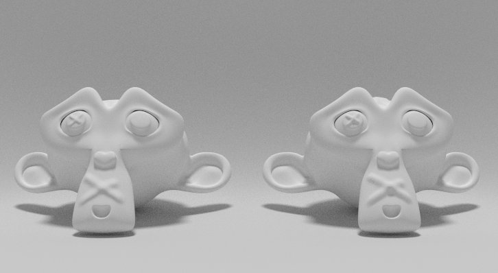
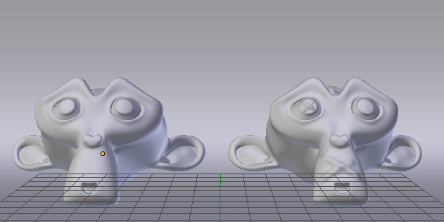
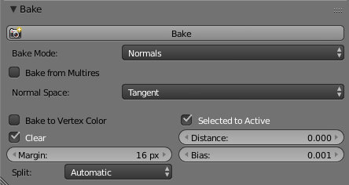
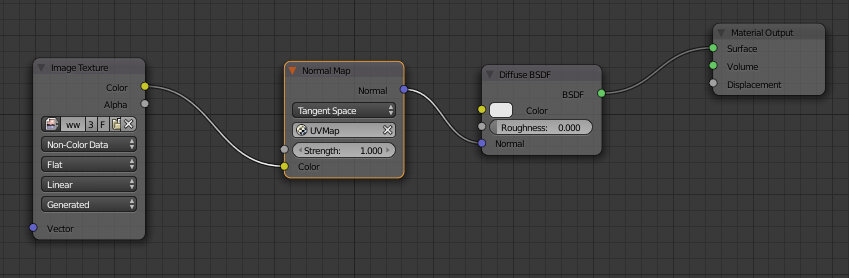
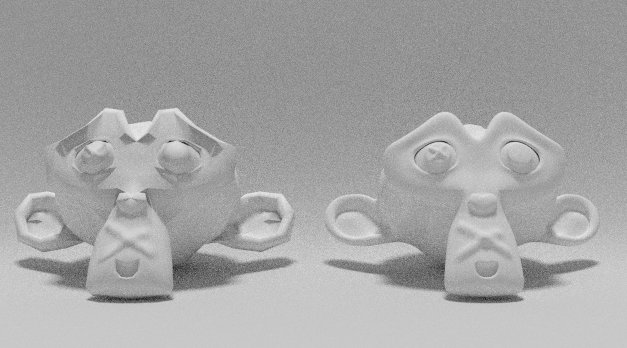

Baking Normal Maps
- Versão
- >= 2.75
- Renderizador
- Todos
Introdução
Os Normal Maps são um dos "truques" mais utilizados em 3D. Permitem introduzir detalhe e variação sem necessitar de mais geometria. Cria uma simulação de detalhes ou imperfeições na superfície mas não altera a geometria.
Compare as duas Suzanne presentes abaixo. A da esquerda tem 500 faces e um Subdivision Surface com 2 níveis. Se aplicássemos (Apply) o Modifier Subdivision Surface ficaríamos com 7.872 faces (mas na imagem não foi aplicado!). A Suzanne da direita tem 31.488 faces.
Exercício
Neste exemplo, vamos utilizar o Blender Internal Render para criar o Normal Map e depois vamos aplicá-lo em Cycles. Para criar o Normal Map em Cycles, procedimentos são similares.
1. Assegure-se que está em Blender Internal Render.
2. Comece por criar 2 versões do seu modelo: a versão High Poly (com os detalhes e a partir da qual irá criar a o Normal Map) e a versão Low Poly (onde irá aplicar o Normal Map).
A nossa Suzanne Low Poly é simplesmente a Suzanne original com um Subdivision Surface com 2 níveis e Shading: Smooth.
A nossa Suzanne High Poly foi criada com a seguinte sequência: 1º adicionar a Suzanne original; 2º Adicionar um Subdivision Surface com 2 níveis; 3º Aplicar o Subdivision Surface; 4º Em Edit Mode, selecionar todas as faces, pressionar W e escolher Subdivide; Aplicar um Shading: Smooth.
Os efeitos (as cruzes) foram criadas com as ferramentas de Sculpt Mode.
3. Os dois modelos têm de estar exatamente no mesmo local (há quem coloque os dois modelos em 2 layers diferentes para poder ter os dois modelos "separados" mas no mesmo local). No nosso caso, selecionámos o modelo Low Poly, pressionámos Shift+S e escolhemos Cursor To Selected. Depois, selecionámos o High Poly, pressionámos Shift+S e e escolhemos Selected To Cursor. Agora, as duas versões estão sobrepostas.
4. Crie um UV Layout na versão Low Poly. Selecionámos a versão Low Poly e, em Edit Mode, pressionámos U e escolhemos Smart UV Projet. Dividimos a área de trabalho e criámos uma nova imagem.
5. No passo seguinte, a ordem de seleção dos modelos é importante! Selecione primeiro a versão High Poly e depois a versão Low Poly. Passe para Edit Mode. Deverá estar a ver o UV Layout criado para a versão Low Poly.
6. No painel Render, localize a secção Bake e configure de acordo com a imagem.

O Bake Mode é Normals porque pretendemos criar um Normal Map. Ative a opção Selected To Active para criar o Normal Map a partir do High Poly (o Selected) e aplicar o mesmo no Low Poly (o Active - quando seleciona vários objetos, o último é o Active). Clique em Bake e aguarde até criar uma imagem com tonos azulados (semelhante à apresentada no passo anterior).
Se a sua imagem tiver áreas a verde ou outras cores que não as visíveis no exemplo, provavelmente tem de recalcular os Normals (ver Erros Comuns). Depois de recalcular os Normals, faça Bake.
7. Grave a imagem "azul" criada.
8. Em Cycles, configure o material aplicado na versão Low Poly de acordo com a imagem abaixo. Repare que no nó Image Texture escolhemos a imagem criada (a imagem azul que constitui o Normal Map) e foi ativada a opção Non-Color Data (não quer que esta imagem influencie a cor...). No nó Normal Map esolhemos o UV Layout criado anteriormente. Neste nós pode utilizar a opção Strength para controlar a intensidade do efeito criado pelo Normal Map.
Em baixo vê a renderização com o Normal Map aplicado na versão Low Poly (repare que as cruzes são visíveis!) mas sem que esteja a ser utilizado o Subdivision Surface. Ou seja, está a aplicar o Normal Map na Suzanne original. Se utilizar um Subdivision Surface e o Normal Map o efeito é o apresentado no topo desta página.
